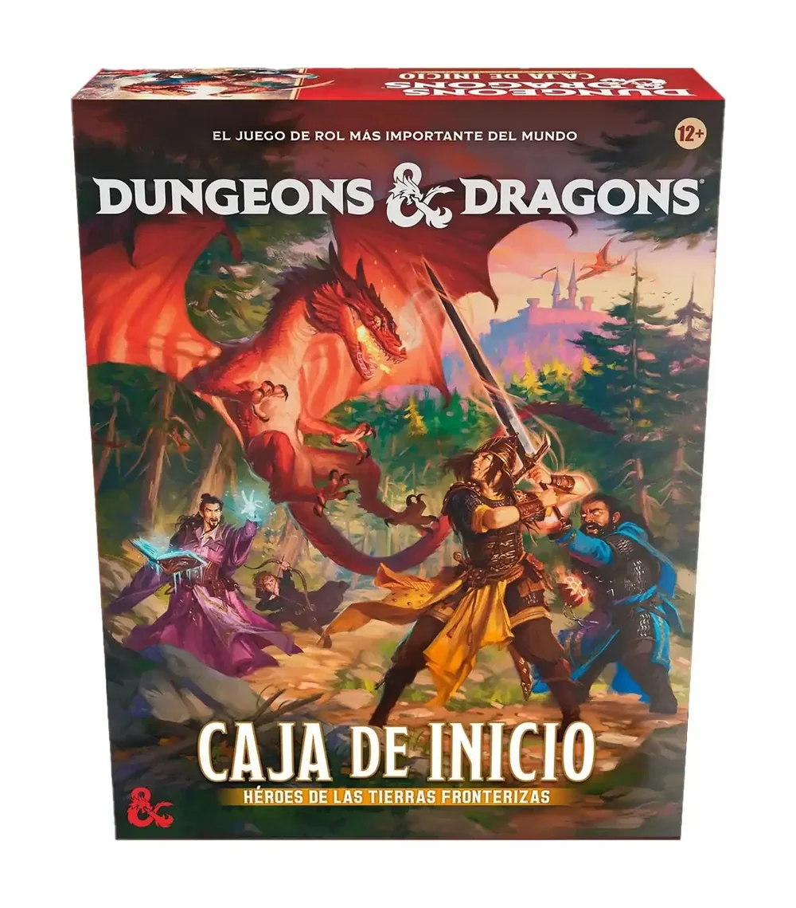
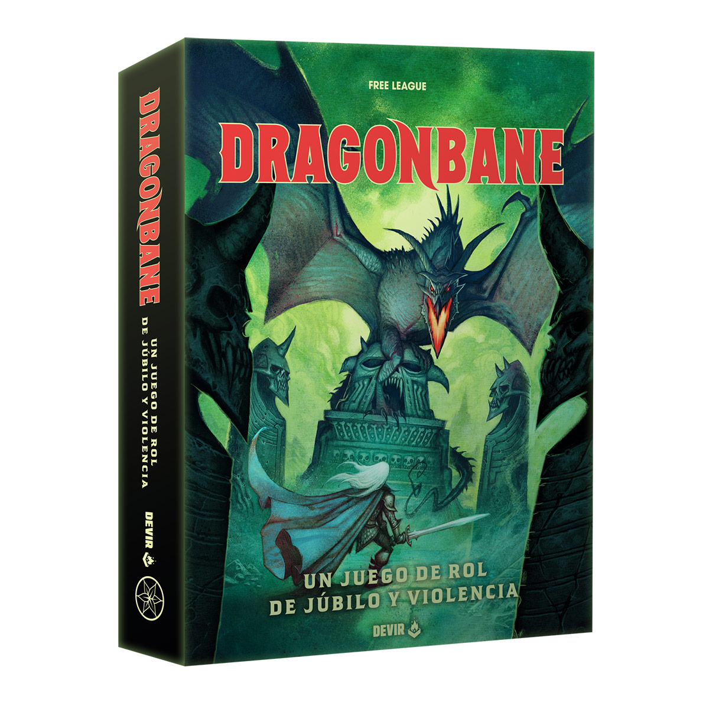

Caja de inicio Dungeons & Dragons
Abre las puertas a una nueva era de aventuras con Héroes de las
Tierras Fronterizas, una caja de inicio pensada para descubrir
Dungeons & Dragons desde la mesa y comenzar a jugar prácticamente
desde el primer momento. Explora el Wilderness, visita el Keep on the
Borderlands y adéntrate en las peligrosas Caves of Chaos mientras tu
grupo decide qué lugares explorar, qué desafíos enfrentar y cómo
desarrollar su propia aventura.
$59.990

Dragonbane
Al principio de los tiempos el universo estaba gobernado por dragones
y demonios. Eran las fuerzas primordiales opuestas de las que nació la
materia primitiva que dio sentido al mundo. Ley y orden contra caos y
locura. Dragones contra demonios. Dragonbane es un juego de rol
clásico lleno de fantasía, magia y misterios. Está diseñado desde cero
para ofrecer aventuras rápidas, emocionantes y muy fáciles de dirigir,
con muy poco tiempo de preparación. Dragonbane es un juego donde hay
espacio tanto para las risas como para combates brutales que pongan a
prueba a los aventureros más experimentados.
$42.990